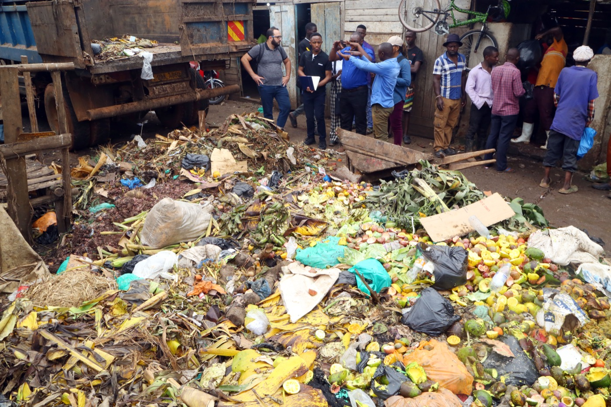
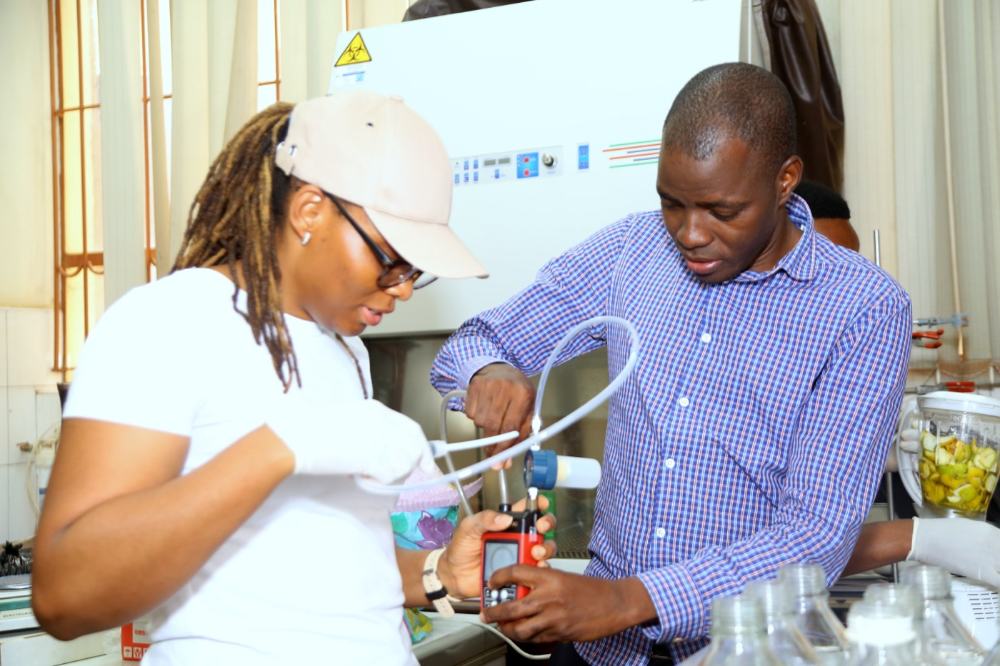
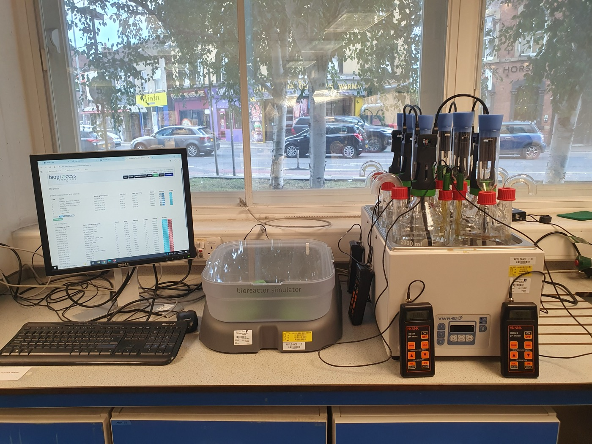
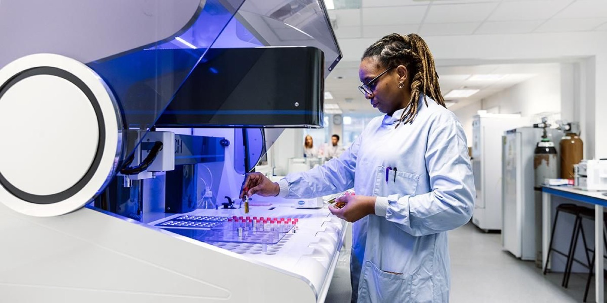

Cynthia Okoro-Shekwaga is a BBSRC Discovery Fellow and University Academic Fellow in WPE. Her research recovers energy from organic waste through anaerobic digestion, and it runs in both directions: equipment and analysis in Leeds, and a decade-long research partnership in Uganda that now has a bioenergy facility of its own.
Starting with the waste itself

In 2022, in collaboration with Makerere University and funded through the Worldwide Universities Network Research Development Fund, the work started by characterising fruit and vegetable wastes from Kalerwe Market in Kampala, to assess their relative potential for biohydrogen recovery. Knowing what a waste stream actually contains is the step that everything downstream depends on.
Building capacity where the waste is

In 2023, through the Research England institutional support fund, she procured an Automatic Methane/Hydrogen Potential Test System III (AMPTS III) and additional handheld gas analysers, and transferred them to Makerere University to establish a joint bioenergy research facility.
The facility has since carried the collaboration further across East Africa, through jointly supervised student projects, training, and follow-on grants.
BioCool: biomethane for off-grid milk cooling
In 2024 and 2025, working with the Ugandan digester installation company Green Heat, the team piloted BioCool, using biomethane recovered from cow dung to provide on-farm milk cooling directly, completely off-grid.
Poor electricity supply means milk cooling centres rely heavily on diesel, and post-harvest losses are high. BioCool addresses both at once, alongside the environmental impact of the organic waste itself. With local policymakers, the technology is now being advanced towards commercial exploitation.
The equipment behind the results

The BRS III runs biogas production under controlled, continuous conditions, which makes it possible to evaluate feedstock mixtures, loading regimes, retention time, additives and long-term process behaviour before anything changes at industrial scale.
Alongside it, an Agilent MicroGC 990 gives gas composition in under three minutes, measuring seven gases from a single sample, injected by hand or connected to the BRS for automatic sampling.

The HACH analytical robot handles the liquid-phase chemistry — chemical oxygen demand, phosphates and the various forms of nitrogen — more quickly and more safely than by hand.
Why it matters
Each step here is the same idea applied at a larger scale: find out what is in the waste, prove what can be recovered from it under controlled conditions, then put the capability where the waste actually is. The result is energy recovered locally, less diesel burned, and less organic waste left to rot.
Meet the rest of the group · BioResources and Circular Economy